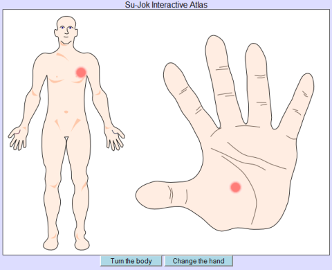

Sujok is a Korean healing method, based on very simple system of body projection on the palms and the feet. The theory behind claims, that the whole body is "projected" on the palms and the feet, and this projection could be used both to diagnose and trigger healing processes in the respective organ or system. For more information, refer to Sujok learning materials in the web or books.
HOW TO USE THE ATLAS:
First, identify the organ or system, which have an issue. You don't need to know what exactly the problem is on the first place, just where it is. For example - pain in the hearth area.
Then point out in the atlas the respective area of the body and see how it is projected on the hand. For best results work separately on both hands, but you can choose only the more convenient one as well:

To identify the exact point of projection, scan the area on the palm with diagnostic probe by gently pushing in place or making small circular movements. Finding a painful point is an indication, that that is the projection of the problematic organ (could be more than one point). Instead of the special sujok probe, any object with the correct form could be used, even a finger (even though with lower resolution than the probe). Don't use sharp objects, which can hurt or cause pain!
Once found, the point needs to be stimulated in order to trigger the body to perform a healing process in the corresponding organs. The stimmulation in sujok could be done in many ways - pressure, puncture, moxa heating, magnets or seeds. The easiest way is just to massage the point with pressure and circular movements, done with the diagnostics probe (or other suitable object or finger, as in the diagnostic mode). The massage should be strong enough, but shouldn't feel uncomfortable. Continue until the pain in the point reduces or disappears:

OTHER EXAMPLES:
Sometimes the cause is known - for example viral infection with flu, but one can not realize where to search, as the virus is everywhere in the body. Then the most symptomatic organs are the chosen - in the case of flu: the nose, the throat, eventually the ears.
Internal organs are also projected on the hands and feets, but the points are on different depth. For example - the points of prostate and the lower gut can be in the same area on the palm, but the scanning will reveal only the point of the problematic organ and it needs to be later stimulated.
DISCLAMIER:
No claims for healing or diagnostics are made. Use the atlas on your own risk. The atlas is developed as a programming excercise, not to proclaim the sujok method. The "Sujok Interactive Atlas" is an unique non-discrete accupuncture atlas, in which there is complete area to area projection (instead of limited number of points, as the other computer programs work).